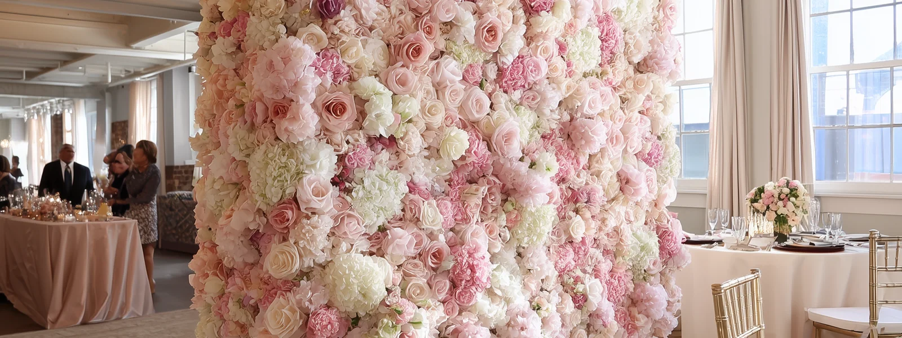

FLORINSKY provides flower wall rental in Oakville with hyper-realistic, studio-made floral backdrops for weddings, bridal showers, baby showers, birthdays, corporate events and private parties. Our collection includes oversized flower walls up to 11×8 ft, available in both flat and semi-circular configurations, with delivery, professional setup and removal throughout Oakville.
Each floral backdrop is created in our studio using premium Real Touch flowers, carefully arranged to reproduce the natural appearance, texture and depth of fresh floral compositions. Our four exclusive designs — Green & Blush, Pink & Ivory, White & Ivory and Burgundy — offer different colour palettes for intimate celebrations, wedding receptions and larger group photographs.
Whether your event takes place at a waterfront venue near Bronte Harbour, a historic property in Old Oakville, a golf club or a modern banquet hall, the right flower wall depends on the actual event space. This guide will help you select a design, understand your venue's access requirements and plan a photo area that works with the room, the lighting and the event schedule.
Explore Our Flower Walls for Oakville Events
FLORINSKY offers four distinct floral designs, each available in standard 8×8 ft and expanded 11×8 ft formats. Choosing the right wall starts with the colour palette and the kind of background you want in your photographs.
Green & Blush Flower Wall
Sage greenery, ivory hydrangeas and soft blush roses create a botanical background for garden-inspired celebrations, weddings and private parties.
View Green & Blush Flower Wall
Pink & Ivory Flower Wall
A soft composition of blush, dusty rose and ivory flowers for bridal showers, baby showers, birthdays and wedding celebrations.
White & Ivory Flower Wall
An elegant neutral composition of white and ivory blooms that can complement a variety of venue interiors and event colour palettes.
View White & Ivory Flower Wall
Burgundy Flower Wall
Deep burgundy, wine and plum tones create a richer floral background for evening receptions, formal celebrations and corporate events.
Choose a Design Around the Event, Not Just the Colour
A wedding reception, a birthday party and a corporate event can use the same floral design in very different ways.
For a wedding, the wall may frame the couple during a ceremony, create a dedicated guest photo area or form part of the reception décor. If you are deciding between these placements, our wedding flower wall rental guide explores the practical differences.
For bridal and baby showers, the backdrop may sit behind a feature table or become the main photography area. Before choosing the position, decide whether guests should be able to stand directly in front of the flowers or whether the wall will primarily be photographed behind the table.
At a corporate event, consider whether the photo area needs to accommodate larger teams, event branding or group photographs.
The intended use helps determine both the wall configuration and the amount of clear space required around it. FLORINSKY's 3D Preview lets you inspect the floral composition in greater detail before choosing the final design.
Oakville Event Venue & Flower Wall Planning Map
Explore event venues across Oakville, from waterfront spaces and historic properties to golf clubs, hotels, banquet halls and community facilities.
The interactive map helps you identify venue locations and review practical considerations before planning your flower wall installation.
The interactive Oakville venue map will appear here once it is published.
Select a venue to explore its setting, access considerations and useful questions to confirm with the venue coordinator.
Venue inclusion does not indicate a partnership with FLORINSKY or that we have previously completed an installation at the property. Access arrangements, venue policies and available event spaces may change, so confirm the requirements for your specific booking directly with the venue.
Planning a Flower Wall at Oakville's Waterfront Venues
Oakville's waterfront creates distinctive opportunities for weddings and private celebrations, but the presence of a lake or harbour view can affect more than the visual style of the event.
A waterfront venue may feature large windows, outdoor terraces, balconies or scenic areas that are separate from the main event room.
Before choosing the flower wall position, decide whether the backdrop should incorporate the waterfront setting or create a separate, controlled photographic background.
Bronte Harbour: Plan Around the Actual Event Room
Bronte Boathouse is a useful example of why the exact room matters.
Its Lakeside Room and Parkside Room are located on the second floor and offer views of Bronte Outer Harbour. The venue also has a separate ground-floor dining room and outdoor spaces associated with its event rooms.
These spaces have different layouts and relationships to the waterfront.
If your event is on the second floor, confirm the approved vendor entrance and equipment route before finalizing the flower wall installation.
For a photo area near panoramic windows, consider the direction of the camera. Strong daylight behind guests can create exposure differences between faces and the bright waterfront background.
A flower wall positioned against a more evenly lit part of the room may provide a consistent background for photographs throughout the event.
If the intended location is a terrace or balcony, confirm that freestanding décor is allowed in that exact space rather than assuming permission for the indoor room extends outdoors.
Downtown Oakville: Separate Guest Access From Vendor Access
The Oakville Club sits beside Sixteen Mile Creek and offers two indoor function rooms and an exterior upper-deck patio.
At a property with both indoor and outdoor event areas, the venue's main entrance does not necessarily provide all the information needed for equipment delivery.
Confirm the booked room, the approved vendor route and whether the photo area will be inside or on the upper deck.
For outdoor placement, ask where the flower wall may stand without affecting terrace doors or guest circulation.
A scenic backdrop should complement the waterfront setting without occupying access routes that guests and venue staff need throughout the event.
Historic Oakville Venues Require a Different Setup Plan
Historic properties often have features that are central to their character but also affect where event décor may be installed.
Oakville Museum's Coach House at Erchless Estate is one example.
The venue operates within a restored heritage building and includes an outdoor terrace. Its published rental rules restrict attaching decorations to historic surfaces and require decorating and removal to take place within the booked rental period.
For a freestanding flower wall, confirm the approved location and carrying route before selecting the final configuration.
There is also an important distinction between renting the Coach House and using the surrounding estate grounds.
The Town specifies that wedding ceremonies associated with the Coach House are limited to the building and terrace. Outdoor photography on the estate grounds requires a separate booking.
If your event plan involves an indoor celebration followed by outdoor photographs, confirm the permissions for each space separately.
A photography reservation should not be treated as automatic permission to install a flower wall on the grounds.
A photography reservation should not be treated as automatic permission to install a flower wall on the grounds.
Plan the Delivery Route Before Choosing the Final Backdrop Position
A flower wall may fit comfortably inside an event room but still require additional planning to reach that position.
In Oakville, the relevant route may involve a waterfront building with an upper-floor event space, a heritage property, a hotel with several meeting rooms or a large banquet centre with different entrances serving different halls.
The useful delivery information goes beyond the venue's street address.
Confirm where a delivery vehicle may stop, which entrance external décor vendors should use, whether the route contains stairs or elevators and when the booked space becomes available for installation.
Ask for the Exact Ballroom or Event Room
Oakville Conference Centre operates multiple banquet and conference rooms, with separate event areas shown on its published floor plan.
For a property like this, the venue name alone is not sufficient setup information.
Ask the coordinator to identify the exact room or room combination, the applicable vendor entrance and the installation window.
If the event uses connected or divided rooms, request the floor plan showing the actual configuration.
A backdrop position that appears available in a photograph of an empty ballroom may no longer work once partitions, guest tables, staging and service areas are in place.
A backdrop position that appears available in a photograph of an empty ballroom may no longer work once partitions, guest tables, staging and service areas are in place.
A Hotel Room Can Change Size Without Changing Its Name
Hilton Garden Inn Toronto/Oakville publishes separate Bronte, Lakeshore and LaSalle meeting rooms, as well as a combined configuration.
That creates a practical distinction between the total event space offered by the hotel and the area available for your specific booking.
A flower wall that works in the combined room may need a different position when the hotel is using the spaces separately.
Before confirming the backdrop, ask whether the room dividers will be open or closed and whether the planned photo area remains entirely within your booked space.

Choosing the Right Flower Wall Size and Configuration
The relevant measurement is not the total size of the venue. It is the usable space allocated to the photo area.
A room may accommodate a large reception while leaving relatively little uninterrupted floor space once tables, entertainment equipment and service stations are installed.
For narrower photo areas, an 8×8 ft backdrop may provide sufficient width for portraits and smaller groups.
An expanded 11×8 ft wall gives wider groups more floral background, reducing the chance that the camera frame will reveal the venue wall beside the flowers.
A flat flower wall or semi-circular floral installation also changes the amount of floor depth required.
A flat configuration creates a more linear backdrop. A semi-circular configuration brings the flowers around the photography area, so the structure itself occupies more depth.
For either option, account for where guests will stand, where the photographer will stand and how people will enter and leave the photo area.
A useful floor-plan check is to draw the flower wall, the approximate camera position and the area needed for people waiting to be photographed. If that waiting area overlaps a doorway or service route, reconsider the position before the room layout is finalized.
Outdoor Flower Wall Setup in Oakville
Outdoor installations require two separate decisions: whether the selected location is physically suitable and whether the property owner permits the proposed décor.
At a private venue, confirm the exact patio, lawn, courtyard or terrace rather than relying on a general statement that outdoor décor is allowed.
The installation surface, access route, available space and weather exposure all affect the setup plan.
FLORINSKY offers an adjustable support system for uneven terrain. However, the suitability of a particular outdoor location must still be assessed before the installation is confirmed.
An indoor or covered alternative should also be identified in advance.
Wedding Ceremonies in Oakville Town Parks
The Town of Oakville offers outdoor wedding ceremony bookings at the Butterfly Gazebo in Bronte Heritage Waterfront Park and Nottinghill Park.
These are designated ceremony locations rather than unrestricted outdoor reception venues. The Town's published conditions permit certain decorations at the designated ceremony space but require approval of outside suppliers and adherence to delivery, installation and removal requirements.
Before arranging a flower wall for a Town park ceremony, confirm that the proposed freestanding structure is permitted under the specific booking.
The Town also prohibits staking or spiking items into the ground at these event sites. Its supplier requirements include commercial liability insurance and approval for the vendors providing event materials or services.
A flower wall should therefore be included in the permit discussion rather than added to the ceremony plan after the venue has been booked.
A flower wall should therefore be included in the permit discussion rather than added to the ceremony plan after the venue has been booked.
Photography Permission Is Not the Same as Décor Permission
Oakville also offers photography bookings at designated park locations.
A booking that permits wedding or event photography does not automatically establish permission to deliver and install a freestanding floral structure.
If the flower wall is intended for a municipal photography location, ask the Town specifically whether the installation is allowed under the applicable booking.
For private venues, obtain the property owner's approval instead.
What to Confirm Before Booking Your Oakville Flower Wall
| Information | Why it matters |
|---|---|
| Event date | Confirms availability for the requested event |
| Venue name and full address | Identifies the property and delivery location |
| Exact ballroom, room or outdoor area | Prevents planning around the wrong event space |
| Preferred floral design | Establishes which wall you are considering |
| Preferred size and configuration | Helps determine the required installation area |
| Intended use | Distinguishes a guest photo area from a ceremony or reception feature |
| Approved backdrop position | Confirms the venue accepts the location |
| Vendor entrance and unloading instructions | Establishes the equipment delivery route |
| Stairs, elevator or doorway restrictions | Identifies possible access limitations |
| Earliest vendor entry and setup deadline | Defines the available installation window |
| Removal time and exit route | Establishes end-of-event access |
| Outdoor permission and backup location | Provides an alternative if the outdoor plan changes |
If you have a current floor plan or a photograph of the proposed backdrop location, include it with your enquiry.
The purpose is to confirm that the selected flower wall works with the actual venue layout before event day.
Oakville Areas We Serve
FLORINSKY provides flower wall rental throughout Oakville, including Downtown Oakville, Old Oakville, Bronte, Glen Abbey, River Oaks, Joshua Creek, West Oak Trails, Kerr Village, College Park, Clearview and other neighbourhoods within the town.
Events in these areas can involve different types of properties, from waterfront restaurants and historic buildings to golf clubs, community facilities, hotels and private residences.
For delivery planning, provide the exact event address and the room or outdoor area being used.
FLORINSKY also serves Toronto and other GTA communities, including Mississauga.
Ten Oakville Venues to Consider When Planning Your Backdrop
The following venues illustrate different event environments in Oakville. They are planning references, not rankings, recommendations or claims that FLORINSKY has previously completed installations at these properties.
The useful question for each venue is how its actual layout, access arrangements or rental conditions might affect the flower wall.
Bronte Boathouse
Bronte Boathouse offers second-floor event rooms overlooking Bronte Outer Harbour, together with a separate ground-floor event space. Its Lakeside and Parkside rooms have different dimensions and associated outdoor areas. Confirm which room is booked, how external décor reaches it and whether the intended photo position is indoors or on an approved balcony or terrace. For a waterfront-facing photo area, check the camera direction against the panoramic windows before finalizing the layout.
Oakville Museum — Coach House
The Coach House is a heritage venue with a relatively compact interior and an adjoining terrace. The Town prohibits attaching decorations to historic surfaces and requires all decorating and removal to fit within the booking period. It also treats outdoor photography on the surrounding Erchless Estate grounds as a separate permission. Confirm the approved freestanding backdrop position, third-party vendor requirements and whether the proposed installation will remain entirely within the rented space.
The Oakville Club
The Oakville Club offers two indoor function rooms and an upper-deck patio beside Sixteen Mile Creek. Because the indoor rooms and exterior deck create different photographic environments, confirm which space is included in the event booking and whether outside décor is allowed at the intended position. If the backdrop is planned for the deck, clarify the vendor route and how much usable space remains once guest circulation and terrace access are accounted for.
Glen Abbey Golf Club
Glen Abbey offers two different event spaces: the Canadian Open Room, which has access to an adjoining patio, and the ClubLink Room, which features floor-to-ceiling glass overlooking the golf course. These spaces create different considerations for photography and placement. Ask which room is booked, whether patio access forms part of the event and where the flower wall may stand without interfering with doors or guest movement. For the ClubLink Room, evaluate the proposed camera direction against the large windows.
Oakville Golf Club
Oakville Golf Club's main dining room has a high cathedral ceiling and large windows overlooking the course and ravine. The club also identifies outdoor areas suitable for event photography. For an indoor flower wall, check the backdrop position against the window light and final dining layout. If the event includes outdoor photographs, confirm which parts of the property are available and whether the flower wall itself may be installed outside rather than assuming that photography access includes décor permission.
Oakville Conference Centre
Oakville Conference Centre has multiple banquet and conference rooms, including a grand ballroom, pre-function areas and outdoor event spaces. Its published floor plan makes the exact room configuration an important part of the rental discussion. Confirm which hall or combination of halls is booked, where external décor is permitted and which entrance vendors should use. If your event includes a separate ceremony or pre-function area, clarify whether the flower wall will remain in one location or whether a different arrangement is required.
OE Banquet & Conference Centre
OE Banquet & Conference Centre offers a flexible event space that can be divided into three separate rooms. A divided layout may change the available backdrop width, the position of entrances and the way guests move between event areas. Request the floor plan for the booked configuration and identify the approved photo area before selecting the wall's final position. Also confirm the external vendor entrance and installation window rather than assuming access arrangements are identical for every room.
Queen Elizabeth Park Community and Cultural Centre
Queen Elizabeth Park Community and Cultural Centre contains several different spaces, including studios, program rooms, a rehearsal hall and the Black Box Studio Theatre. The theatre includes a flexible performance area, stage equipment and theatrical drapes. If your event uses a performance or cultural space, confirm whether outside freestanding décor is allowed, which surfaces and circulation routes must remain clear and whether the proposed flower wall affects stage or technical arrangements. The suitability of a backdrop should be evaluated for the exact booked room, not the facility in general.
Hilton Garden Inn Toronto/Oakville
Hilton Garden Inn Toronto/Oakville offers several event rooms, including Bronte, Lakeshore and LaSalle, which can be used in a combined configuration. The actual room arrangement therefore determines the clear space available for a floral backdrop. Confirm whether the dividers will be open or closed, whether the photo area is inside the booked space and which route the hotel wants outside décor vendors to use. A combined-room photograph should not be used to plan a setup for a smaller divided meeting room.
Oakville Centre for the Performing Arts
Oakville Centre for the Performing Arts rents distinct performance spaces, including its main auditorium and Studio Theatre. A flower wall intended for a theatre event must be planned around the approved area and the venue's operating requirements, rather than treated like a conventional banquet-room backdrop. Ask whether the floral installation is allowed in the specific rented space, which entrance and carrying route external vendors should use and whether any stage, audience or technical access must remain unobstructed.
Flower Wall Rental Oakville FAQs
Do you provide flower wall rental with delivery and setup in Oakville?
Yes. FLORINSKY provides flower wall rental throughout Oakville with delivery, professional setup and removal.
Include the full venue address, exact event room and any access instructions supplied by the venue when requesting your quote.
What flower wall sizes are available for Oakville events?
FLORINSKY offers standard 8×8 ft and expanded 11×8 ft flower wall configurations.
The appropriate size depends on the available venue space, intended photographic composition and selected design.
Can I choose a flat or semi-circular flower wall?
Yes. FLORINSKY offers both flat and semi-circular configurations.
The semi-circular option requires additional usable floor depth. Confirm the available space and approved installation position before the venue layout is finalized.
Can a flower wall be installed at an Oakville waterfront venue?
Potentially, subject to the venue's permission and the suitability of the exact location.
For a terrace, balcony or outdoor photo area, confirm the approved décor position, access route and whether the space is included in your event booking.
Can I rent a flower wall for a wedding ceremony in an Oakville Town park?
A freestanding flower wall may be possible if the Town expressly approves it under the applicable wedding ceremony booking.
The Town has specific supplier, insurance, delivery and decoration requirements for its designated park ceremony locations. Do not assume that the ceremony permit automatically authorizes the installation.
Can I install a flower wall at Erchless Estate if I rent the Coach House?
The Coach House and its terrace are subject to the Museum's rental conditions. Use of the surrounding estate grounds for photography involves a separate permission.
Confirm the proposed flower wall position and any necessary approvals directly with the facility before making installation arrangements.
How much does a flower wall rental cost in Oakville?
Send FLORINSKY your event date, venue address, preferred flower wall and configuration to receive a quote.
The confirmed rental details will specify the selected design, delivery, installation and removal arrangements for your event.
What information should I provide if my Oakville venue has several event rooms?
Include the exact ballroom, hall or meeting room, together with the venue's vendor entrance and unloading instructions.
If the room can be divided, a floor plan showing your event's final configuration will help establish the suitable backdrop position.
Get a Quote
Planning an event in Oakville? Send FLORINSKY your event date, venue name and full address, exact ballroom or event space, preferred flower wall and any vendor-access information already supplied by the venue.
If the proposed location is outdoors, also include the venue-approved position and the planned indoor or covered backup.